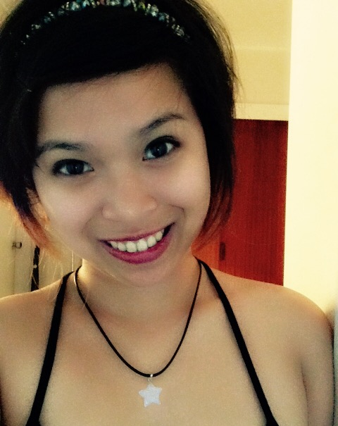

Bianca / VCD / Wgtn
I'm an indoor person.
I find it VERY fulfilling to be able to watch animes,
movies and do all sorts of stuff in the comfort of my home more than going out.
I LOVE food as much as I love sleep & the indoors. Food is love; food is life.
I decided to do design because ever since I was a child
I wanted to be able to draw and create things my way but also in a sense that
people could appreciate the work I have done. I want people to see through my
soul by just looking at my work.
1. Made in the Philippines.
Yes, I am Filipino, and you are correct!
That does make me Asian, thank you very much for noticing.
2. So you speak fluent Filipino.
I'm from down south of the country and we speak a different dialect, so,
no, Filipino is not my native tongue.
3. I heard you guys eat dogs.
No, not all of us do. It's probably a thing in some places,
but definitely not where I came from. That's just sick, and wrong, and downright cruel.
Why would I do that :|
4. You sound American.
I don't know why our accent gives people that idea,
but we were colonised by the Americans at some point, so, it's probably that.
5. Do you eat rice?
Do I eat rice?! I LIVE RICE. Well, to be honest, I am trying to cut down but,
it's just so hard! I could never end my day without rice, seriously.
6. Tell us about your Whanau.
We moved to New Zealand four years ago along with the whole family.
I'm the eldest among three siblings– my sister's the middle child (LOL, no offense) and then,
our baby brother. Grew up in a traditional but sort of (maybe slightly) modern family,
it's a bit of both really. Let's just put it this way, we're Asian. You get the idea. #AsianParents